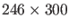
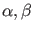
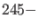
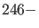
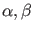
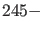
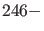

Next: Continuation of fold bifurcation Up: Period Doubling Previous: Period doubling initialization Contents
For this example the adaptive control system
 |
(69) |
>> [x0,v0]=init_EP_EP(@adaptx,[0;0;0],[-10;1],[1]); >> opt = contset; opt = contset(opt,'Singularities',1); >> [x,v,s,h,f]=cont(@equilibrium,x0,[],opt); first point found tangent vector to first point found label = H , x = ( 0.000000 0.000000 0.000000 1.000002 ) First Lyapunov coefficient = -3.000001e-01 elapsed time = 0.7 secs npoints curve = 300 >> x1=x(1:3,s(2).index);p=[x(end,s(2).index);1]; >> [x0,v0]=init_H_LC(@adaptx,x1,p,[1],1e-6,20,4); >> opt = contset(opt,'MaxNumPoints',200); >> opt = contset(opt,'Multipliers',1); >> opt = contset(opt,'Adapt',1); >> [xlc,vlc,slc,hlc,flc]=cont(@limitcycle,x0,v0,opt); first point found tangent vector to first point found Limit point cycle (period = 6.283185e+00, parameter = 1.000000e+00) Normal form coefficient = -1.306201e+00 Branch Point cycle(period = 6.283185e+00, parameter = 9.999996e-01) Period Doubling (period = 6.364071e+00, parameter = 6.303020e-01) Normal form coefficient = -4.267675e-02 Neutral Saddle Cycle (period = 6.433818e+00, parameter = 1.895459e-08) Period Doubling (period = 6.364071e+00, parameter = -6.303020e-01) Normal form coefficient = 4.268472e-02 elapsed time = 58.3 secs npoints curve = 200 >> plotcycle(xlc,vlc,slc,[size(xlc,1) 1 2]); >> [x0,v0]=init_PD_PD(@adaptx,xlc,slc(4),[1 2],20,4); >> opt = contset; opt = contset(opt,'Singularities',1); >> [xpd,vpd,spd,hpd,fpd]=cont(@perioddoubling,x0,v0,opt); first point found tangent vector to first point found Resonance 1:2 (period = 4.841835e+00, parameters = 5.317604e-09, 1.698711e+00) (a,b)=(-7.330657e-02, 5.220090e-09) Resonance 1:2 (period = 9.058318e+00, parameters = -3.045539e-07, 6.782783e-01) (a,b)=(-1.060571e+01, -3.537444e-04) elapsed time = 195.4 secs npoints curve = 300 >> cpl(xpd,vpd,spd,[245 246]);
We note that xpd is a
 matrix; each column corresponds to a computed period doubling limit cycle and gives the coordinates
of all points of the fine mesh, i.e.
 values, plus the period
values, plus the period  as the
as the  component and the
values of the two active parameter  as the th and the components.
component and the
values of the two active parameter  as the th and the components.